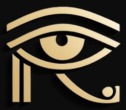
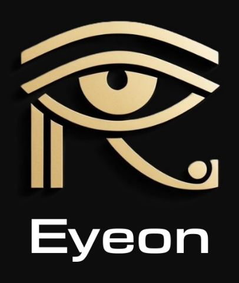

الرئيسية

بندانة Eyeon
البندانة: مش متوصلة
الكاميرا: مش متوصلة (هستخدم كاميرا الموبايل)
المتصفح ده مش بيدعم البلوتوث. افتح التطبيق من Chrome على أندرويد، أو من تطبيق Bluefy على آيفون. تقدر تجرب كل حاجة دلوقتي بزرار "تجربة من غير جهاز".
آخر رسالة
الرادار
للمرافق: الدايرة هي الراس والسهم ناحية القدام. كل لون مستوى خطورة، وكل حلقة متر.
المسافات
تدريب على لغة الاهتزاز
مكان الاهتزاز هو اتجاه العائق، وسرعة النبض هي المسافة. ابدأ بالدروس بالترتيب وبعدين الاختبار.
اختبار
دوس "سؤال جديد"، حس بالاهتزاز، وبعدين اختار الاتجاه والمسافة.
الطوارئ
الاستغاثة بتشتغل من الزرار هنا، أو بالضغط ٥ ثواني على زرار البندانة، أو تلقائي لو البندانة حسّت إنك وقعت. بيبدأ عد تنازلي تقدر تلغيه، وبعدها الرسالة بتتجهز بمكانك على واتساب أو SMS لأول رقم في القايمة.
الإعدادات
إعدادات البندانة
وصّل البندانة الأول (أو شغّل التجربة) عشان تعدّل إعداداتها.
أدوات
إعدادات التطبيق
من غير مفتاح، التعرف على الأجسام وقراءة الكلام بيشتغلوا على الموبايل نفسه. بالمفتاح الصورة بتتبعت لـ Claude (محتاج إنترنت). المفتاح بيتحفظ على الموبايل ده بس؛ استخدم مفتاح عليه حد للصرف.

بصيرة
التطبيق المصاحب لبندانة Eyeon: البندانة بتحس بالعوائق حوالين راسك وبتوصّلها بالاهتزاز، وبصيرة بتوصف المكان وبتقرا وبتساعد في الطوارئ.